Benchmark cases
In this example, we will use FreeRay to model 4 benchmark cases for outdoor sound propagation as published by Attenborough et al. (1995).
There is an unit point source at $h_s = 5.0$ m, a receiver at $h_r = 1.0$ m and at a horizontal range $R=10,000$ m. The source emits a constant tone of $f = 100$ Hz.
The ground surface is treated as an impedance boundary with the specific characteristic impedance $Z_c = 12.81 + i11.62$. This value is used to calculate spherical-wave reflection coefficients.
The differences between 4 benchmark cases are the use of different sound speed profiles such as constant, positive, negative and composite profiles.
Case 1: Constant sound speed profile
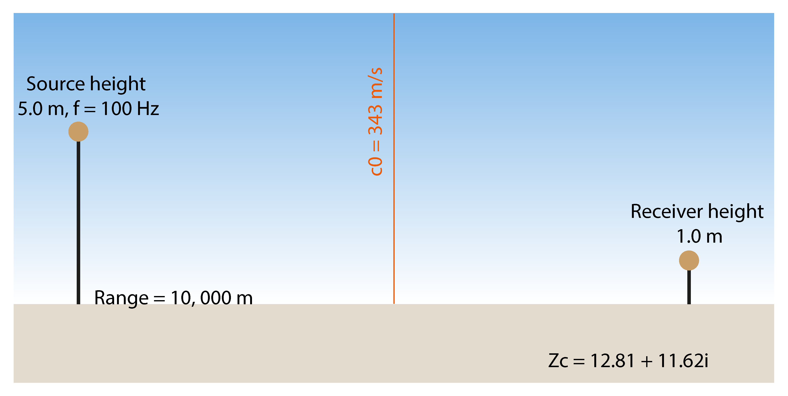
Load FreeRay package
using FreeRaySource
We may notice that the source height is inputted as a negative number. This is convention of Bellhop where upper and lower spaces are modelled as negative and positive axis, respectively. We are interested in upper space, so hereafter all input values for height are negative numbers.
source = Source(
frequency = 100f0, # Hz, f0 indicate Float32 number.
height = -5f0) # m, heightReceiver
In the benchmark case, only receiver at 1.0 m is interested, but to plot the transmission loss field, we here will calculate for every grid points spacing 1.0 m in both vertical and horizontal directions. The investigation region is 1,000 m in height and 10,000 m in range. Obviously, this will cover the configuration of the benchmark case!
receiver = Receiver(
depth_point = 1001, # number of points in height
range_point = 10001, # number of points in range
depth = Vec2(-1000f0,0f0), # height between -1000 m and 0
range = Vec2(0f0,10f0)) # range between 0 and 10 km (range is always in km)Terrain geometry
We assume that the ground elevation is flat for now, real ground elevation will be discussed in other examples.
terrain = Terrain(
interp_type = "C", # interpolation method for ground elevation
profile = (Vec2([0f0,5f0,10f0],[0f0,0f0,0f0])) # need 3 points for modelling flat terrain
)Boundary condition
The ground surface is modelled using reflection coefficients which are calculated from characteristic ground impedance $Z_c$. These coefficients are calculated using Q_reflection or R_reflection functions for spherical-wave reflection coefficients or plane-wave reflection coefficients. The top boundary is atmospheric, thus can be modelled as "no reflection". In other words, the reflection coefficients are zero.
# Vec3(grazing angle, coefficient, phase angle)
Zc = 12.81 + 11.62im
Theta, Rmag, Rphase = R_coeff(Zc;len=100) # plane-wave reflection coeff.
brc = Vec3(Theta,Rmag,Rphase)
trc = Vec3([0f0,45f0,90f0],[0f0,0f0,0f0],[0f0,0f0,0f0])
reflection = Reflection_Coeff(
top_coeff = trc,
bottom_coeff = brc)Sound speed profile
In this case, we use constant sound speed profile $c_0 = 343$ m/s.
# Vec2 (height, sound speed)
sspl = Vec2([-1000f0,-500f0,0f0],[343f0,343f0,343f0])
ssp = SSP(sound_speed_profile = sspl)Analysis
This is an important part to specify what analysis we want to run. There are several options as follows:
analyse = "R"- ray tracinganalyse = "E"- eigenrayanalyse = "A"- amplitudes and travel times
analyse = "CG"- coherent geometric ray modelanalyse = "IG"- incoherent geometric ray modelanalyse = "CB"- coherent Gaussian ray modelanalyse = "IB"- incoherent Gaussian ray model
Other options can be found in Bellhop document.
opt = Analysis(
filename = "Case0_Bellhop_f10", # name of output files
analyse = "RG", # analysis options C-coherent, I-incoherent, G-Geometric ray, B- Gaussian ray.
option1 = "CFW",
option2 = "F*",
num_ray = 161, # number of ray, resulting in resolution of take-off angles
alpha = Vec2(-80.0f0,80.0f0), # take-off angle from -80 to 80
box = Vec2(10f0,1000.0f0), # analysis region
step= 0
)Create input files
All input files will be created for analysis.
Environment(opt,source, receiver,ssp,terrain,reflection)Run Bellhop
To run Bellhop in Julia, we just need to call run(bellhop filename). To see running time, we use macro @time.
fn = opt.filename
filename = "temp\\$fn"
run_bellhop = `bellhop $filename`
@time run(run_bellhop)Plots
It takes 0.21 seconds to run ray tracing.
# plot ray
PlotRay("$filename.ray",
xlabs = "Range, m",
ylabs = "Height, m")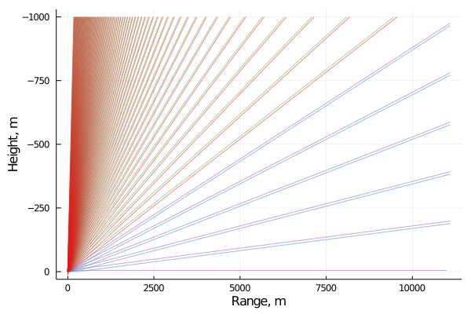
It takes 7.18 seconds to analyse transmission loss field. The results seem to be not really good at near top layer and distances faraway from the source. We may need to increase the resolution of take-off angles of rays. Currently we use 161 rays, resulting in the resolution is 1 deg.
# plot transmission loss field
PlotShd("$filename.shd";
xlabs = "Range, m",
ylabs = "Transmission loss, dB",
cblabs = "dB",
climb = (40,80))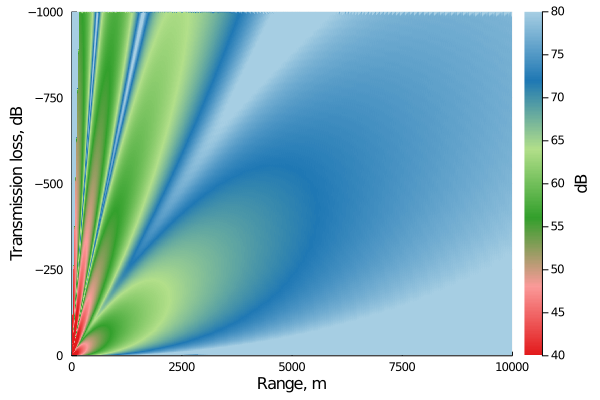
Now we try 1601 rays with the resolution of 0.1 deg. It's much better! and it takes only 12.7 seconds to analyse the acoustic field with 1.0 x 10 km with 1.0 m grid and 0.1 deg take-off angle resolution. It is really fast! This is expected because Bellhop is a highly efficient and optimal program written in Fortran. Thus, it is no need to be rewritten in other languages! (I did try in Julia but my code is not better than Bellhop :))
My question is if we can make it faster? We will save the answer to a real problem at next section.

Case 2: Positive sound gradient (Downwind)
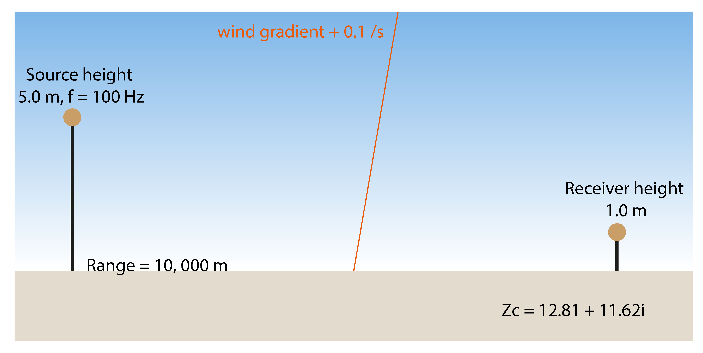
In this case, we only need to modify sound gradient in below code
# Vec2 (height, sound speed)
sspl = Vec2([-1000f0,-500f0,0f0],[443f0,393f0,343f0])
ssp = SSP(sound_speed_profile = sspl)It takes 0.31 seconds to run ray tracing and 23.7 seconds to run transmission loss field.
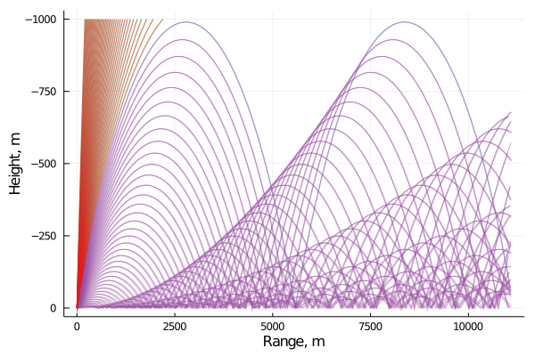
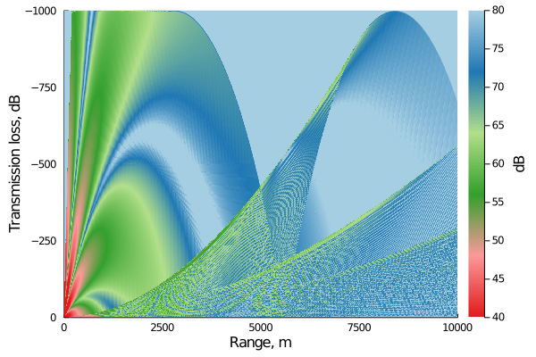
Case 3: Negative sound gradient (Upwind)
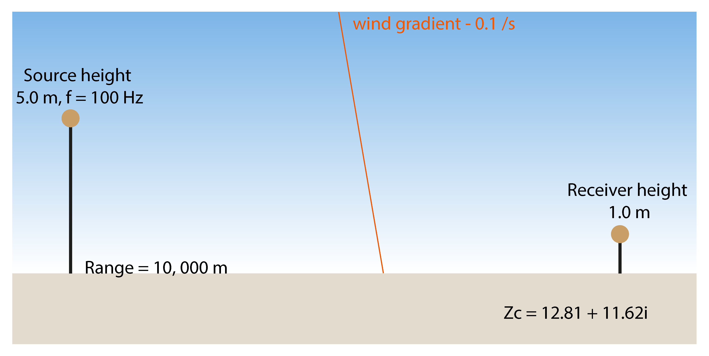
Modify to negative sound gradient
# Vec2 (height, sound speed)
sspl = Vec2([-1000f0,-500f0,0f0],[243f0,293f0,343f0])
ssp = SSP(sound_speed_profile = sspl)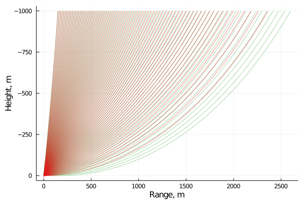
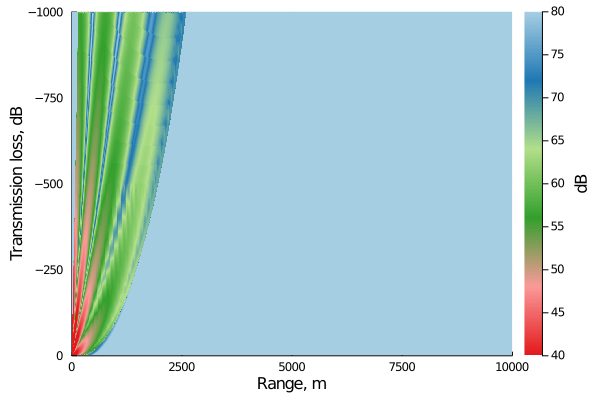
Case 4: Composite profile

Modify to composite sound gradient.
# Vec2 (height, sound speed)
sspl = Vec2([-1000f0,-300f0,-100f0,0f0],[333f0,333f0,353f0,343f0])
ssp = SSP(sound_speed_profile = sspl)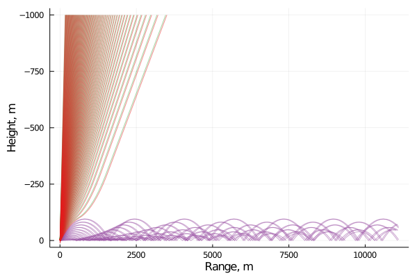
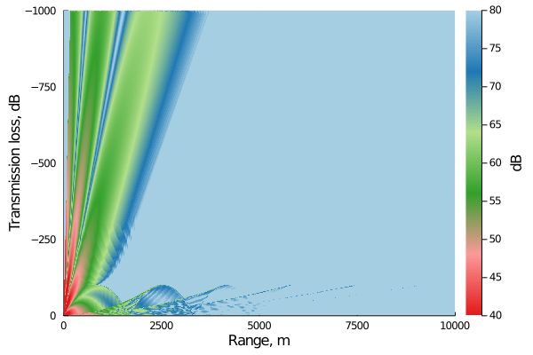